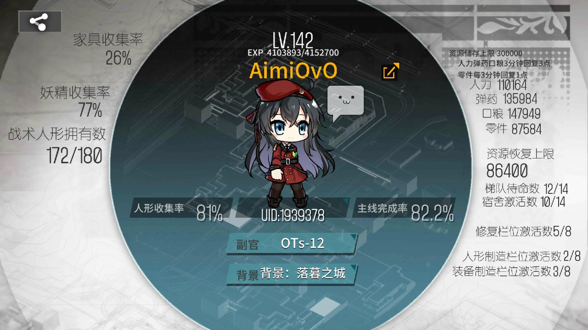
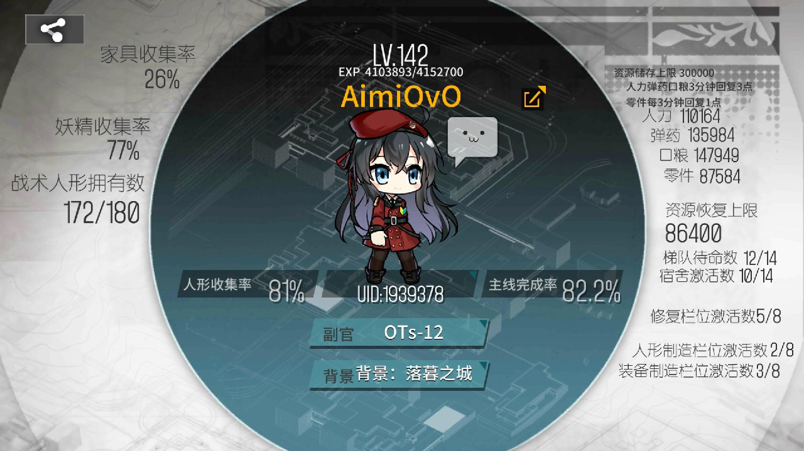
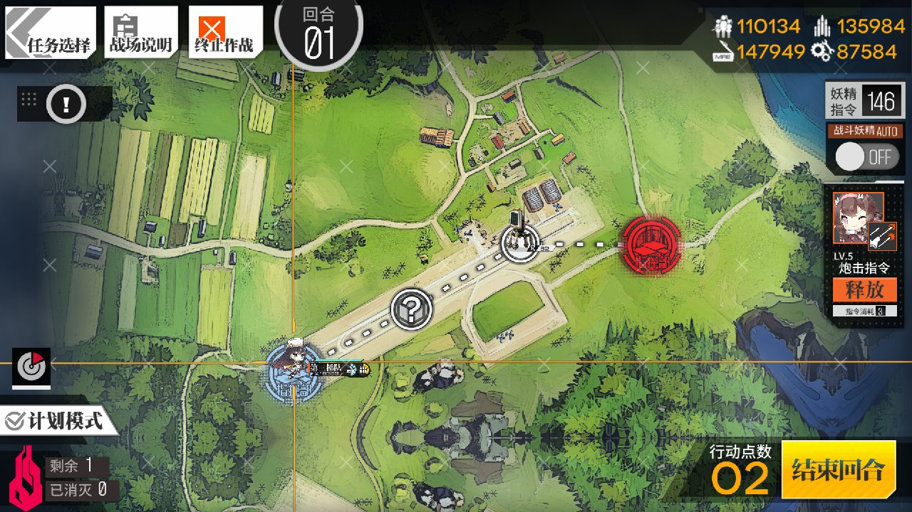

指挥官在登入指挥部时会看到以下界面，左上是指挥官信息、左中是队伍活动信息、左下是实时热点信息、右中是功能区、右下是功能栏
在您指挥部界面左上是指挥官信息，当您点击栏时，便会弹出如下图的只会官信息。
在您指挥部界面左侧有一个黄色带有表盘的小箭头，当您点击该标签，便会弹出如下图的梯队活动信息。
带带萌新网
1905年，一处在东欧偶然发掘的未知生命遗迹，使得人类第一次接触坍塌与逆向坍塌。
直到2030年，一场几名中学生的小小冒险误闯了高度机密的遗迹，随后的救援发生意外。
直到2030年，一场几名中学生的小小冒险误闯了高度机密的遗迹，随后的救援发生意外。 引发了连锁事件，使得这项技术的核心物质——坍塌液全面泄露。由于封锁不力，坍塌液对外界造成了空前的破坏，城市蒸发，人口锐减，大量的生存空间被污染。 这场彻底改变世界面貌的可怕灾难，被称为北兰岛事件。

北兰岛事件后，前所未有的恐怖灾变在地球上疯狂扩散。各国在仓皇挽救危机的同时，也在互相推脱和指责。最终，矛盾的裂痕达到了极点。2045年，为了争夺干净的土地和粮食——这份源于人类最纯真和野蛮的愿望，全球范围内的战争爆发，史称第三次世界大战。
战争之后的世界变得更加满目疮痍，文明秩序在生存的边缘苟延残喘。各地政权无法再维护人民的安全，使得大量安全承包商也应运而生。而大量区域遭到污染，不再适用居住和开采，这直接促使了机器和人工智能的技术进步。
第三次世界大战之后，现存的国家和组织为了减少财政开支和管理压力，只集中保护一些大型城市和工业基地。而对于其他小型城市和偏远地区，则采取竞标的方式，承包给私人军事组织。
在此种形式下，各种大小的安全承包企业应运而生，以维持地区安全的名义获得巨额利润，为安全承包商生产武器装备的工业公司也大范围建立了起来。起初，安全承包商的部队主要以人类雇佣兵组.

2053年，由退伍军人克鲁格成立的安全承包公司，其运作资金主要由自身的人脉拉拢的政府和财团提供。起初，格里芬和其他安全承包商一样，以人类雇佣兵为主力部队。
但一年后，第一代战术人形问世，让克鲁格看到了新的可能。他希望购买战术人形作为格里芬的主要战斗力，以减少人类的伤亡。
指挥官在登入指挥部时会看到以下界面，左上是指挥官信息、左中是队伍活动信息、左下是实时热点信息、右中是功能区、右下是功能栏
在您指挥部界面左上是指挥官信息，当您点击栏时，便会弹出如下图的只会官信息。
在您指挥部界面左侧有一个黄色带有表盘的小箭头，当您点击该标签，便会弹出如下图的梯队活动信息。
指挥官，当您点击右侧的编成时，便会进入到梯队编成界面，在这里您可以决定您的梯队成员构成、梯队辅助妖精、梯队成员装备以及梯队阵型。
1. 作战任务
指挥官，在了解过队伍编成后，您将会进入到实战环节，点击战斗按钮，您将会进入到战斗界面(如下图所示)。
在左侧您可以看到战斗任务分为：战斗任务、后勤支援、模拟作战、常驻活动、特殊任务。
在作战任务界面，当您点击要攻略的当前关卡时，会出现作战设置界面，在这个界面会显示当前关卡的战斗报酬及您的出击设置选项。
在出击设置中分为普通作战和自律作战，其中普通作战将由您亲自操作，自律作战会按时间进行出击。
当您以普通作战方式进入战斗地图后，点开左上角的战场说明便可以获得当前关卡的勋章解锁方式。
同时在作战任务中，只有己方指挥部和机场可部署梯队。
当您部署梯队时，会出现当前选择梯队的界面，请根据地方情况选择己方梯队，或在选择梯队时选择队伍编成进行重新编排。
部署梯队时，左侧会有支援梯队选项，该选项是您可以选择系统支援梯队或者您好友的支援梯队。
在战斗进行界面，指挥官您可以选择手动进行行进操作，但请注意右下角的行动点数，这是您在当前回合内可以进行的移动步数。
当然，在您忙于其他事情的时候，也可以使用左下角的计划模式，来代替您的人为移动操作。
在右上方，有一个支援指令的标栏，这里显示您剩下的支援指令数量，您也可以将支援指令调为自动，这样您将会自动发动妖精技能。在关闭支援指令自动的情况下可以根据需要点击释放按钮。
当您在行进过程碰到地方单位，便会进入战斗界面。
此时您下方是人形的技能栏，上面的数字是该技能的CD时间，等CD冷却便可释放，您可以选择自动释放或者手动释放，自动释放按钮在右侧上方AUTO自动技能按钮。您可以根据需要来决定您的发动技能时间。
当您点击在场人形时，会出现一个关于当前您点击的人形的具体情况，上面有撤退按钮，如果您遇到不利情况，请主动撤退人形，主机人形倒下惩罚是很严重的。
或者您点击某位人形进行拖动，此时人形会根据您的指示进行换位，以此来达成某些战术目标。
同样的操作，长摁人形，便会进入子弹时间，您可以在这种情况下获得更多的判断时间。
当您在战斗过程中遇到强大的敌人，您可以点下上方的暂停按钮，以此来思考研究战术，或者进行全体撤退。
当您达到关卡目标时将会获得胜利到达结算界面时，点击屏幕即可继续。
2. 后勤支援
打开后勤支援界面，您可以看到不同的后勤任务，每个任务所提供的资源并不相同，所以请根据您的需求选择后勤支援。
3. 模拟作战
如上图所示，当您进入到模拟作战界面，会出现以下：强化练习、资料采样、经验特训、云图回廊、防御演习、融合演习六个栏目。
您可以根据需要进行攻略，模拟作战随难度提升获得可获得更多回报。
4. 常驻活动
指挥官，欢迎您来到常驻活动界面，这个项目是以往的大型活动加入永驻栏，总而言之在这里您将体会到与之前完全不同的战斗。
5. 活动任务
在战斗栏最后介绍的是关于活动任务的内容，此类活动分为大型作战(冬活和夏活)、联动活动、节日活动、战区攻略 (无法通过支援达成通关)。
指挥官可以在开放的活动中获得丰厚的奖励
1. 人形制造
左侧是普通制造右侧是重型建造(需要达成关卡金章60个才可开启)。
普通建造包含非SG里各类人形，消耗也会更少，但出率较重型建造更低。重型建造里可以造出SG这类非常强大的人形，但建造消耗也异常巨大，请指挥官谨慎考虑
2. 扩编
指挥官，当您的人形达到一定等级，就可以进行编制扩大，当您进入这个界面，选择您需要扩编的人形，以核心或者相同人形进行扩编。
在当前版本下，可以选择扩编格里芬人形或铁血人形，在选择后会进入对应扩编界面。
3. 强化
指挥官想必您已经注意到了，您的人形在等级提升后，实力依然不见提升。
此时就需要进入到人形强化界面，对需要提升的人形进行强化(强化上限会随着人形等级提升而提升)，在3.0版本下可以选择强化格里芬人形或者铁血人形，在选择后会进入不同的强化界面。
4. 回收拆解
指挥官，当您在游戏过程中，肯定会遇到人形仓库爆满或者强化建造需要核心的情况，那么此时就需要对富裕的人形进行拆解
在新版本中，铁血拆解会获得暗星内核或超星内核，可以用来兑换铁血单位所需的商品。
5. 装备建造
指挥官，如之前所说，决定一个梯队强度的是由人形、装备、妖精三方位综合。
那么此时我将带您了解关于装备系统的建造。 装备系统建造如人形建造一样分为普通建造和重型建造.
普通建造可以获得所有类型的装备，高星级概率较重型建造较低。重型建造耗费资源更多，但是是平时获得妖精的唯一渠道。
在新版本的据点栏里，我们可以看到格里芬基地的3D全貌，并且可以快速点击进入某一区域。在基础界面时，这个栏位会显示四个快速导航栏，可以直接上下拨动到想要进入的区域快速进入。指挥官可以尝试进入各个设施